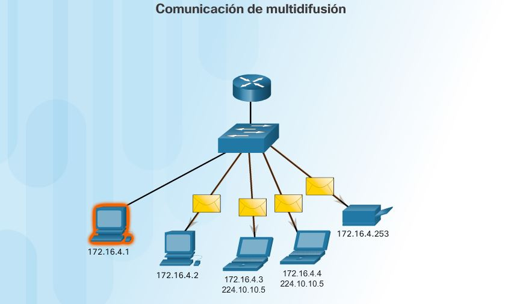

IP multicast
It is the sending of information in a computer network to multiple destinations simultaneously, using the most efficient strategy for sending messages, on each link of the network, only once and creating copies when the links in the destinations are divided.In addition to multicasting, there are also sending from one point to another in a network, which is called unicast (unicast), and sending to all nodes in a network which is called broadcasting (broadcast).
Introduction
Multicasting is the delivery of information to a group of destinations simultaneously, which use the most efficient strategy to deliver messages to each link in the network only once, creating copies only when the links to the destinations are divided.Before sending the information, a series of parameters must be established. In order to receive it, it is necessary to establish what is called a "multicast group". This multicast group has an associated internet address. The version of the Internet protocol known as IPv4 reserves Type D addresses for multicasting. IP addresses have 32 bits, and type D addresses are those in which the 4 most significant bits are '1110' ( 224.0.0.0 to 239.255.255.255).The term multicast is sometimes used incorrectly to refer to a multiplexed broadcast send.The word "Multicast" is typically used to refer to IP Multicast, although it is sometimes used to describe ATM (Asynchronous Transfer Mode), Point-to-Multipoint VCs or Infiniband Multicast. The application of the multicast concept at the IP routing level, where routers (or routers) create optimal distribution paths for datagrams sent to a multicast destination address traversing the tree in real time. Also other implementations of the multicast distribution strategy such as:
- IP Multicast
- Internet Relay Chat
- NNTP
- PSYC
- Peercasting using point-to-point connections.
Multicast technologies on the Internet
P multicasting is a technique for sending to many recipients over an IP infrastructure. Multicasting uses the network infrastructure efficiently so that the source sends a packet only once, even if it has to be delivered to a large number of receivers. The nodes in the network are careful to reproduce the packet to reach multiple receivers only where it is necessary. The IP multicast group address, the multicast distribution tree, and the receiver that drives the tree creation are key concepts in IP multicast.A group multicast IP address is used by senders and receivers to send and receive content. Sources use the group address as the destination IP address in their data packets. The receivers use this group address to inform the network that they are interested in receiving packets sent to that group. For example, if some content is associated with group 239.1.1.1, the source will send data packets destined for 239.1.1.1. The receivers of that content will inform the network that they are interested in receiving data packets sent to group 239.1.1.1. The receiver "binds" to 239.1.1.1. The protocol used by the receivers joined in a group is called Internet Group Management Protocol or IGMP (Internet Group Management Protocol).
Using multicast
IP Multicast to send to a certain group, you do not need a source that knows about the group's receivers. The construction of the multicast tree is initiated by network nodes that are close to the receivers or is driven by the receiver itself. This allows you to send to a large population receiver.While IP Multicast uses a designated multicast address, Explicit Multi-Unicast (XCAST) uses the unicast addresses of all destinations. Since the IP packet size is limited, in general, XCAST cannot be used for multicast groups with a large number of destinations.